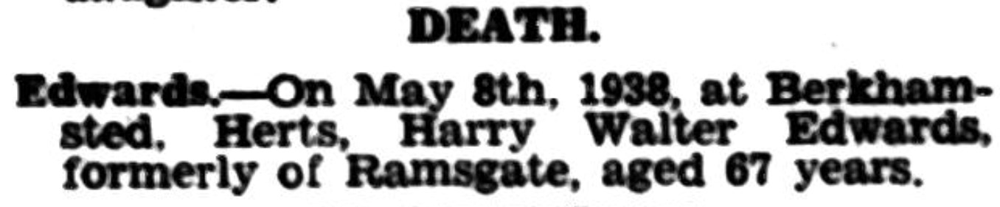

Harry Walter Edwards cMay 1870 - 1938
[ Home ] | [ Calendar ] | [ Surnames Index ] | [ Family History ]A general porter and the child of Stephen Edwards (a stationery engine driver) and Ann Lasslett, Harry Edwards, the first cousin three-times-removed on the mother's side of <a href="I1.html">Nigel Horne</a>, was born in St Lawrence, Thanet, Kent, England <i>c.</i> May 1870<span class="citation">1,2</span> and baptized there on Jul 10, 1870.</p><p>Throughout his life, Harry lived in several places: at Chapel Row, St Lawrence, Thanet, Kent, England on Apr 2, 1871<span class="citation">3</span>; at Whitehall Waterworks, St Lawrence in Thanet on Apr 3, 1881<span class="citation">4</span>; and West Dumpton in Thanet on Apr 5, 1891<span class="citation">5</span>. <p>He died on May 8, 1938 in Berkhamsted, Hertfordshire, England<span class="citation">2</span>.
Parents
- Stephen was born c. May 1847
- Ann Maria was born c. 1849
Citations
- England & Wales births 1837-2006 - Findmypast
- England & Wales deaths 1837-2007 - Findmypast
- 1871 England, Wales & Scotland Census - Findmypast (was age 0 and the son of the head of the household)
- 1881 England, Wales & Scotland Census - Findmypast (was age 10 and the son of the head of the household)
- 1891 England, Wales & Scotland Census - Findmypast (was age 20 and the son of the head of the household)
Media
East Kent Times and Mail - 25 May 1938

1871 England, Wales & Scotland Census - GBC/1871/0014303328
England & Wales births 1837-2006 - BMD/B/1870/2/AZ/000199/040
1881 England, Wales & Scotland Census - GBC/1881/0004864112
Kent Baptisms - GBPRS/CANT/B/96404734
England Births & Baptisms 1538-1975 - R_885341880
England & Wales deaths 1837-2007 - BMD/D/1938/2/AZ/000267/144
Family Tree

Generated by Ged2Site. Last updated on Jul 20, 2025